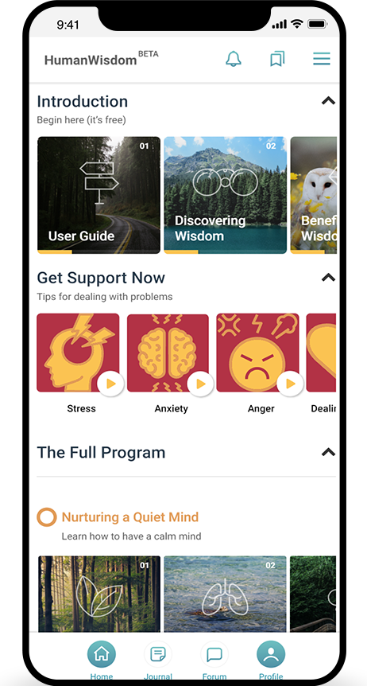
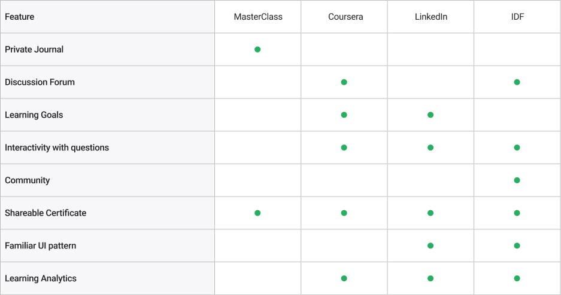
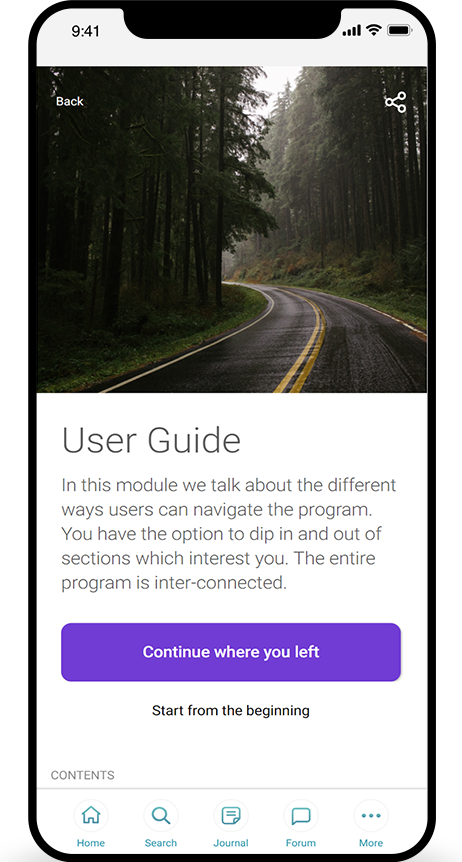
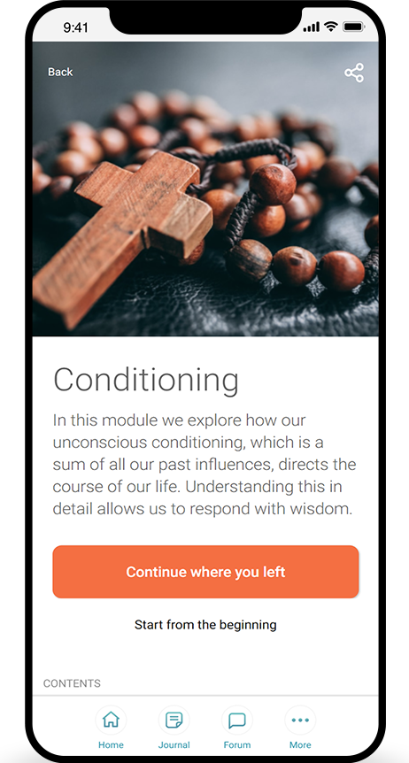
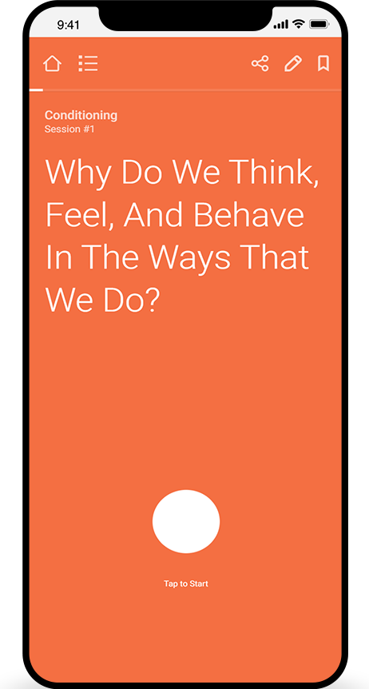
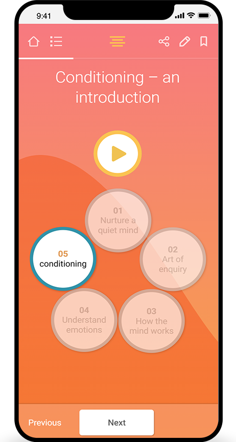
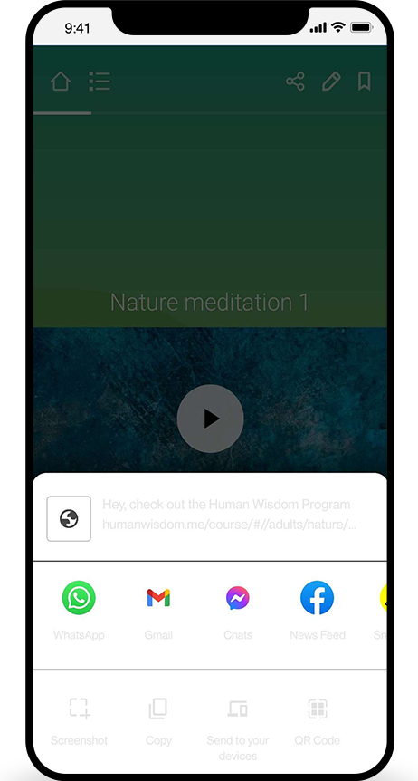
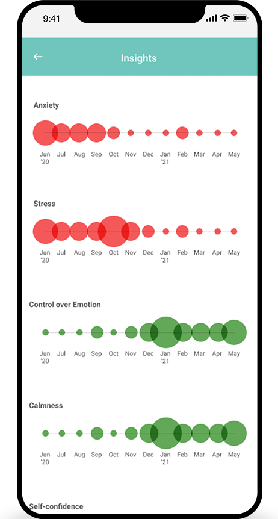
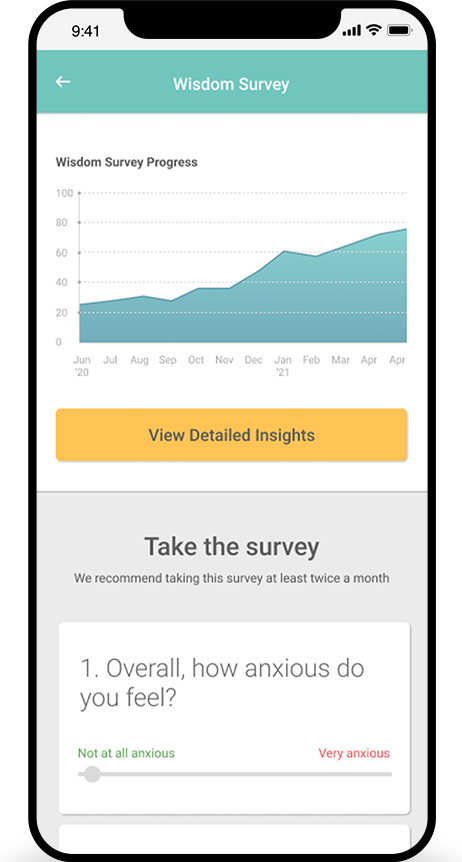
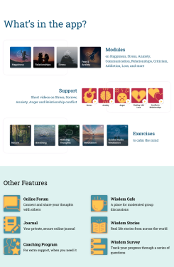

The Human Wisdom Program
Problem
The learning material on Articulate was unstructured. The content was repetitive, the slides were not interactive and the navigation from one module to the other was difficult. The goal of this project was to design and develop an interactive E-Learning application through which learners could easily navigate between modules and track their progress.

My role
User Research: User Interviews, Competetive Analysis, Journey Mapping
UX Design: Sketches, Wireframes, Low fidelity prototype.
Development: PWA for users and web app for admin, database optimization.
Research
I interviewed Dr Manoj Krishna to better understand his vision of the learning application. We conducted 3 interviews with Dr Krishna. Following are some questions that I prepared for the interview:
What is your vision behind the learning program?
What impact would you like the course to leave on learners?
Who will be the users of the application?
What expectations do you have from the program?
What is the problem with the current system on Articulate?

Problem Statement
Based on our interviews, and insights, we decided that our application would address three problems:
- To structure the content and make the application more interactive
- To connect learners with each other.
- To allow ease of navigation between different modules.
Final Solution
Based on user interviews, I decided to combine features of E-learning and streaming applications. This would wnable users to engage with the learning program, track their progress and the navigation experience would give them an experience of using a digital streaming service.







